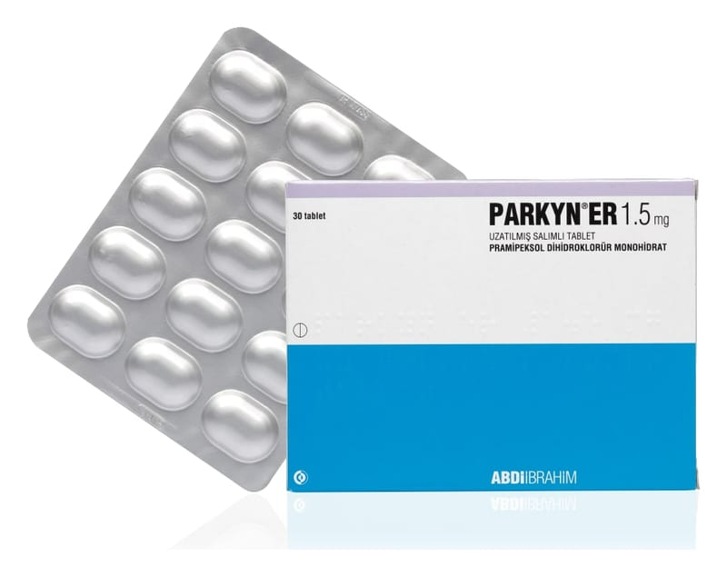

Parkyn ER 1.5 mg Uzatılmış Salımlı Tablet, 30 Tablet

Ne için kullanılır
KT · Bölüm 1PARKYN ER 1,5 miligram uzatılmış salımlı tabletler, beyaz ya da beyazımsı, oval, bikonvekstir. PARKYN ER 1,5 miligram uzatılmış salımlı tablet, 30 tablet içeren blister ambalajlarda piyasaya sunulmaktadır.
PARKYN ER, pramipeksol adı verilen bir ilaç etkin maddesini içerir ve dopamin agonisti adı verilen bir ilaç grubuna dahildir. Bu grup ilaçlar, beyindeki bazı algılayıcıları (dopamin reseptörleri) uyararak etki gösterir. Dopamin reseptörlerinin uyarılması, beyindeki sinir sinyallerini tetikleyerek vücut hareketlerinin kontrol edilmesine yardımcı olur.
PARKYN ER, primer (ilk defa ortaya çıkan) Parkinson hastalığının belirtilerinin tedavisinde tek başına veya levodopa (Parkinson hastalığında kullanılan diğer bir ilaç) ile birlikte kullanılabilir.
Bu ilacı kullanmaya başlamadan önce bu KULLANMA TALİMATINI dikkatlice okuyunuz, çünkü sizin için önemli bilgiler içermektedir.
• Bu kullanma talimatını saklayınız. Daha sonra tekrar okumaya ihtiyaç duyabilirsiniz. • Eğer ilave sorularınız olursa, lütfen doktorunuza veya eczacınıza danışınız. • Bu ilaç kişisel olarak sizin için reçete edilmiştir, başkalarına vermeyiniz. • Bu ilacın kullanımı sırasında, doktora veya hastaneye gittiğinizde doktorunuza bu ilacı kullandığınızı söyleyiniz. • Bu talimatta yazılanlara aynen uyunuz. İlaç hakkında size önerilen dozun dışında yüksek veya düşük doz kullanmayınız.